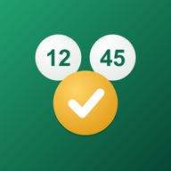
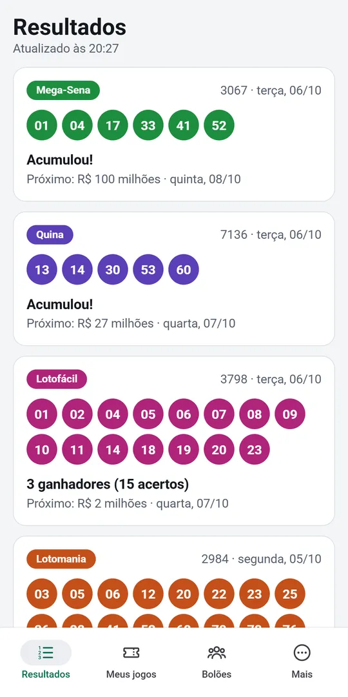
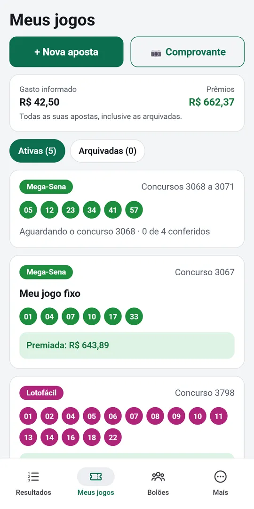
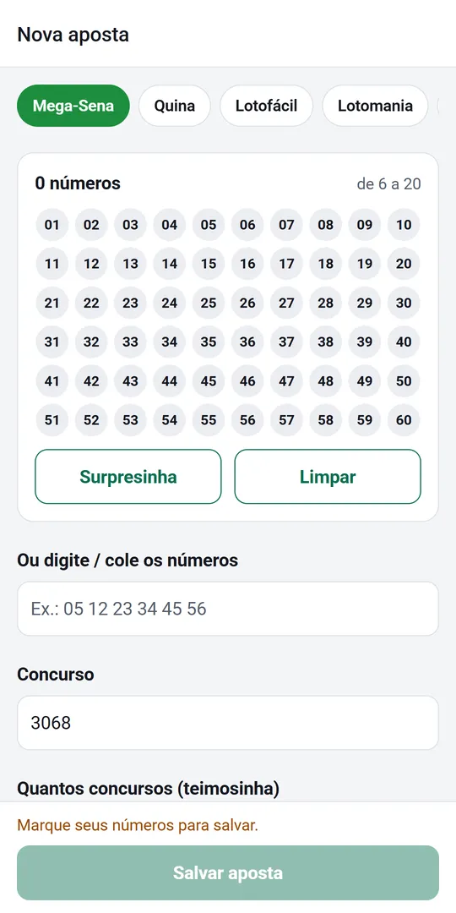
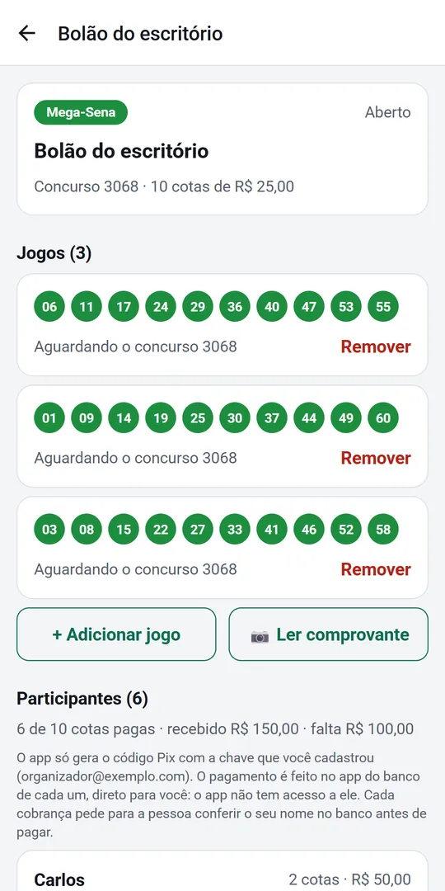

LotoCerto: resultados, conferência de jogos e bolão
Tire foto do recibo da lotérica e o app confere seus jogos sozinho a cada sorteio. Grátis para Android e iPhone.
Sem cadastro e sem login. Proibido para menores de 18 anos.
Mega-Sena, Lotofácil, Quina, Lotomania, Timemania, Dupla Sena, Dia de Sorte, +Milionária e Super Sete, com os prêmios de cada faixa.
Cadastre o jogo pela foto do recibo, pelo volante ou falando os números. O app confere a cada sorteio e avisa se você ganhou.
Jogos, participantes e cotas num lugar só, com quem já pagou e quanto cabe a cada um. Compartilhe no WhatsApp.
Confere vários concursos seguidos e jogos com mais números, e mostra a sua parte quando você compra cota de bolão na lotérica.
Veja o app




Mega da Virada
Vai fazer o bolão da Virada com a família ou o trabalho? Cadastre os jogos no LotoCerto, divida as cotas e compartilhe com o grupo. Na noite do sorteio o app confere tudo e mostra quanto cabe a cada participante.
Suporte
Perguntas frequentes
O LotoCerto vende apostas?
Não. O app não vende apostas, não recebe pagamentos de apostas e não é ligado à CAIXA. Ele mostra os resultados e confere as apostas que você já fez numa lotérica ou nos canais oficiais da CAIXA.
De onde vêm os resultados?
Dos resultados públicos das loterias da CAIXA. Confira sempre o resultado oficial antes de ir receber um prêmio.
Como cadastro uma aposta?
Em “Meus jogos”, marque os números no volante, fale os números ou toque em “Comprovante” e tire uma foto do recibo da lotérica. A leitura é feita no próprio celular; confira os números com o papel antes de salvar.
Não recebi a notificação do resultado
Verifique se as notificações do LotoCerto estão permitidas nos Ajustes do celular. O sistema decide quando o app pode atualizar em segundo plano: se a notificação atrasar, abrir o app atualiza na hora.
Como funciona o bolão?
Quem organiza cria o bolão, adiciona os jogos e os participantes e compartilha a mensagem no WhatsApp. Os participantes podem importar essa mensagem para acompanhar. No Android, o app também gera o código Pix com os dados que o organizador informou, mas não participa do pagamento: confira sempre o nome de quem recebe no app do seu banco.
Comprei uma cota de bolão na lotérica. O app mostra a minha parte?
Sim. Ao ler o comprovante de um bolão CAIXA, informe quantas cotas são suas. Se o bolão for premiado, o app mostra o prêmio total e a sua parte.
Troquei de celular. Como levo meus jogos?
Na aba “Mais”, use “Fazer backup agora” e guarde o arquivo (por exemplo, no iCloud Drive ou no Google Drive). No celular novo, instale o LotoCerto e use “Restaurar um backup” com esse arquivo.
Comprei “Remover anúncios” e os anúncios voltaram
Na aba “Mais”, toque em “Restaurar compras”, usando a mesma conta da App Store (ou Google Play) em que a compra foi feita. A compra é única e vale para sempre nessa conta.
Jogue com responsabilidade
As loterias são proibidas para menores de 18 anos. Aposte só o que você pode perder e nunca conte com o prêmio. Se o jogo estiver trazendo problemas, procure ajuda.
Privacidade
O app não pede cadastro e guarda seus jogos só no seu aparelho. Leia a Política de Privacidade.